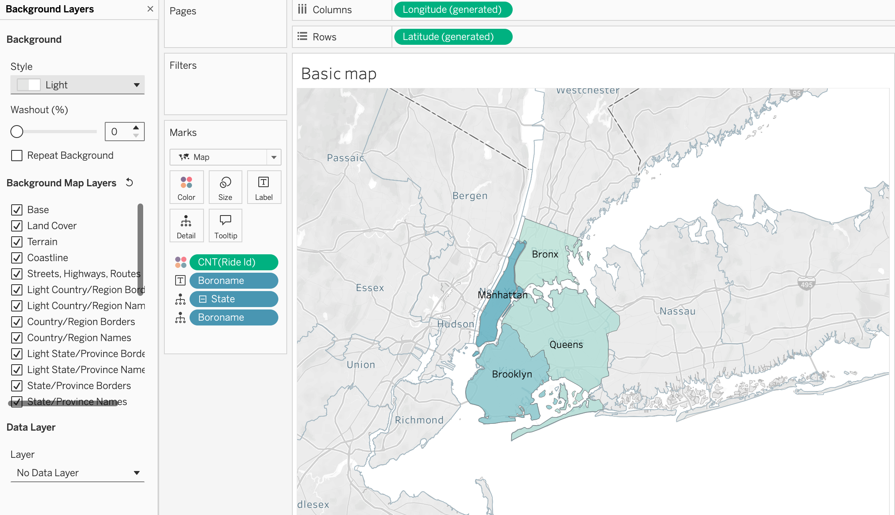
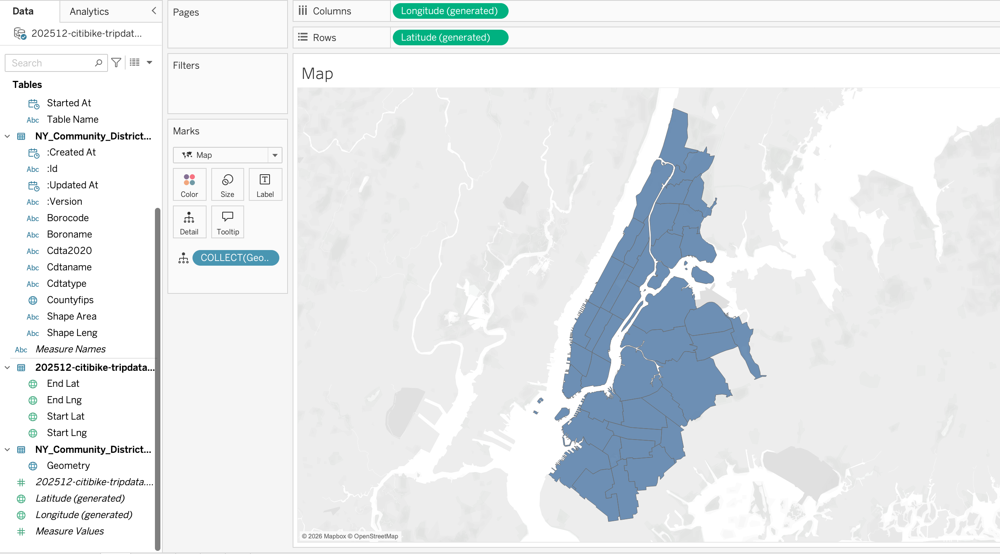
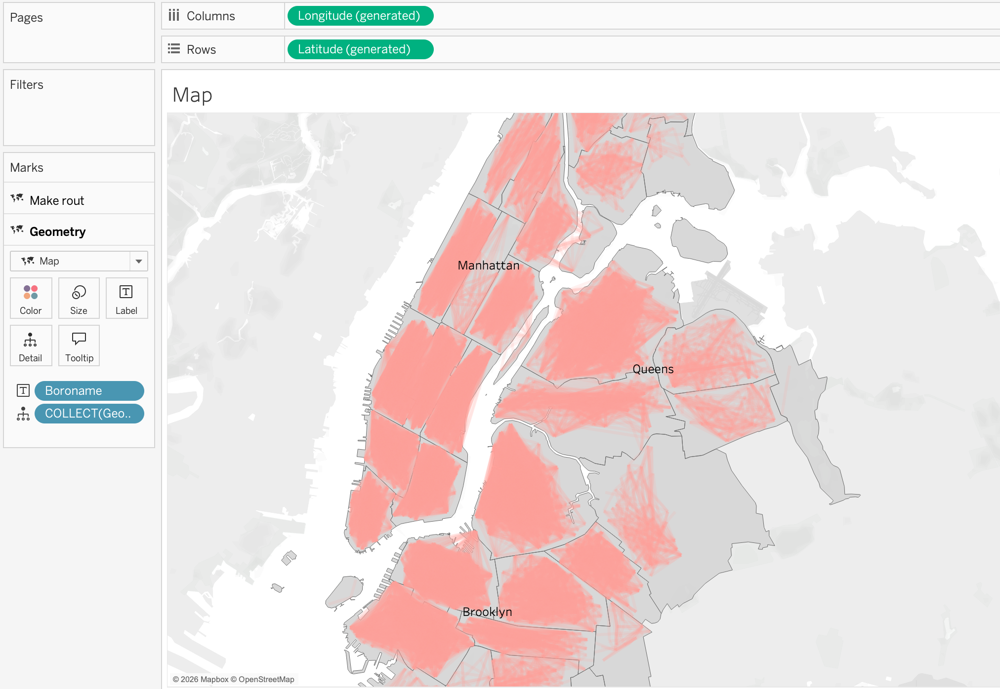
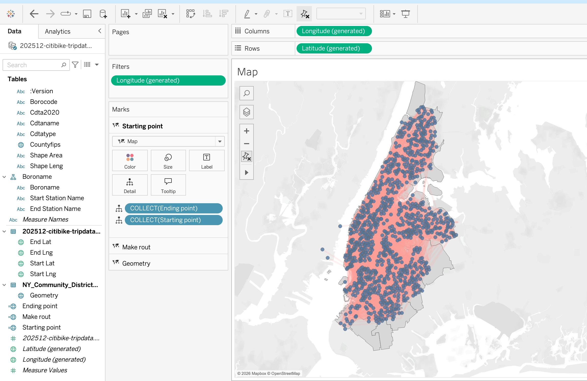
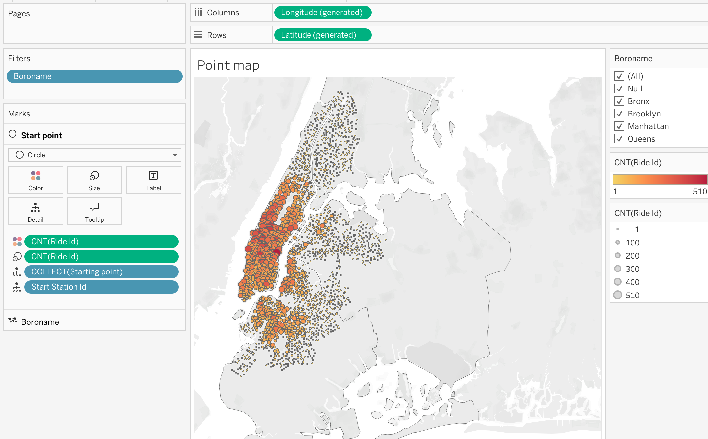

Session 05: Spatial Analytics
Working with Geographic Data in Tableau
Spatial Analytics
Spatial analytics focuses on analyzing data that contains a geographic component.
Unlike traditional visualizations, spatial analysis allows us to understand how data behaves in relation to location, distance, and geographic structures. It enables answering questions such as where events occur, how locations interact, how movement happens across space, and how metrics vary across regions.
Maps are powerful because they allow patterns to be understood visually. They are especially useful when geography is not just a visual element, but a key part of the analysis.
Geographic Data Formats
Geographic data can exist in multiple formats, and understanding these formats is essential for correct analysis.
- Spatial files such as Shapefile (
.shp), GeoJSON, KML - Flat files such as
ExcelorCSV - Databases with spatial or location-based fields
Spatial files store both:
- Geometry → the shape (point, line, polygon)
- Attributes → descriptive data
When a spatial file is connected, Tableau automatically creates a Geometry field, which can be directly used for mapping.
Location-based data (like City, Country, Latitude, Longitude) does not contain shapes. Tableau uses geocoding to convert these values into map coordinates.
Dataset for Spatial Analysis
In this session, we use:
- Citi Bike dataset (trip-level data with coordinates)
- NYC District GeoJSON file (polygon-level data)
The Citi Bike dataset contains:
StartandEndcoordinates
- Time information
- Station details
Since the dataset is split across multiple CSV files, we combine them using Union.
The GeoJSON dataset contains:
- District boundaries (MultiPolygon)
- Geographic shapes for mapping
Spatial Relationships
We have already seen how spacial relationships work during the SQL and Python sessions. Spatial relationships are used when datasets do not share a common key but still need to be analyzed together.
Steps to Create Spatial Relationship
- Load the Citi Bike dataset
- Combine all CSV files using Union
- Add the GeoJSON file to the data model
- Create a calculated field in both datasets:
'New York'- Use this field to create a relationship between the datasets
This approach allows Tableau to connect the datasets logically without physically joining them, preserving flexibility and avoiding duplication.

Now we have a working relationship between two tables.

Spatial Joins
Spatial joins combine datasets based on geographic relationships rather than keys.
The most common spatial join is:
- INTERSECTS → checks if two geometries overlap
Steps to Create Spatial Join:
- In the data source tab, switch to the physical layer
- Add the Citi Bike dataset
- Create calculated fields:
MAKEPOINT([Start Lat], [Start Lng])MAKEPOINT([End Lat], [End Lng])- Drag the GeoJSON dataset next to the Citi Bike dataset
- Choose Left Join
- Set join condition:
- Spatial field (point) INTERSECTS polygon geometry
This will match each trip to a district based on location.

Common issue:
Geometry is incompatible with geography
Solution:
- Convert
geometrytogeography
- Use coordinate system
EPSG:4326
- Ensure coordinates follow
Longitude,Latitudeorder
Spatial Functions
Spatial functions enable advanced geographic calculations directly within Tableau. They allow you to create, transform, and analyze spatial objects such as points, lines, and polygons. These functions are especially important when working with coordinate-based datasets, as they convert raw latitude and longitude values into map-ready objects and allow analytical operations such as distance measurement, movement analysis, and spatial comparison.
Spatial functions are commonly used together with mapping and spatial joins. They help bridge the gap between raw data and geographic insight, making it possible to answer questions about proximity, interaction, and movement.
Common Use Cases
- Converting latitude and longitude into spatial points
- Visualizing movement between two locations
- Measuring distance between locations
- Creating service or coverage areas
- Identifying overlapping or interacting regions
Examples
Creating a spatial point from coordinates:
MAKEPOINT([Latitude], [Longitude])Visualizing movement between two locations:
MAKELINE(
MAKEPOINT([Start Lat], [Start Lng]),
MAKEPOINT([End Lat], [End Lng])
)Calculating distance between two points:
DISTANCE(
MAKEPOINT([Start Lat], [Start Lng]),
MAKEPOINT([End Lat], [End Lng]),
'km'
)Spatial Functions Summary
| Function | Description | Typical Use Case |
|---|---|---|
| MAKEPOINT | Converts latitude and longitude columns into a spatial point. | Enabling spatial joins for coordinate-based datasets. |
| MAKELINE | Creates a line between two spatial points. | Origin–destination maps, mobility analysis, route visualization. |
| DISTANCE | Calculates the distance between two spatial points using specified units. | Nearest branch analysis, trip distance calculation, proximity analysis. |
| AREA | Returns the total surface area of a spatial polygon. | Territory size comparison, land coverage analysis. |
| LENGTH | Returns the total geodetic length of a linestring geometry. | Route length measurement, infrastructure analysis. |
| BUFFER | Creates a radius around a point, line, or polygon. | Service coverage zones, delivery radius modeling, proximity analysis. |
| INTERSECTS | Returns True or False indicating whether two geometries overlap. | Spatial joins, containment checks. |
| INTERSECTION | Returns the overlapping portion between two geometries. | Market overlap analysis, shared service area evaluation. |
| DIFFERENCE | Subtracts the overlapping area of one polygon from another. | Identifying uncovered or restricted areas. |
| SYMDIFFERENCE | Removes overlapping portions from both geometries and returns the remaining parts. | Territory comparison and competitive analysis. |
| OUTLINE | Converts polygon geometry into boundary lines. | Styling borders separately from polygon fill. |
| SHAPETYPE | Returns the geometry structure as text (Point, Polygon, etc.). | Debugging spatial data issues. |
| VALIDATE | Confirms whether spatial geometry is topologically correct. | Cleaning corrupted spatial files and preventing join errors. |
Geographic Data Visualization
Mapping in Tableau is not only about placing marks on a geographic background.
It is a combination of:
- Data modeling
- Geocoding
- Aggregation logic
- Visual design
For a map to function correctly both analytically and visually, we need four foundational components to be configured properly:
- Data Type
- Data Role
- Geographic Role
- Geographic Hierarchy
If any of these elements are misconfigured, you may encounter:
- Unknown locations
- Incorrect aggregation
- Missing map rendering
- Broken drill-down behavior
- Spatial joins that do not work as expected
Data Type | Structural Foundation**
The Data Type determines how Tableau stores and interprets the raw values.
This is the first layer of configuration.
Common Geographic Data Types
| Field Type | Required Data Type | Why |
|---|---|---|
| Latitude | Number (Decimal) | Must allow precise coordinate plotting |
| Longitude | Number (Decimal) | Must allow precise coordinate plotting |
| Country/State/City | String | Needed for geocoding |
| Postal Code | String | Preserves leading zeros |
| Geometry (GeoJSON/Shapefile) | Geometry | Native spatial object |
Incorrect data types can cause:
- Aggregation errors
- Loss of leading zeros (postal codes)
- Tableau not recognizing geographic information
- Failure in map rendering
If Postal Code is stored as Number:
01234becomes1234- Geocoding fails
Data Role | Analytical Behavior
The Data Role defines how Tableau treats the field in analysis.
Two primary roles:
- Dimension → categorical grouping
- Measure → numeric aggregation
Typical Configuration for Mapping
| Field | Data Role |
|---|---|
| Latitude | Measure |
| Longitude | Measure |
| Country | Dimension |
| State | Dimension |
| City | Dimension |
| Geometry | Measure |
If Latitude/Longitude are set as Dimensions:
- Points may not render correctly
- Aggregation logic may break
Geographic Role | Geocoding Layer
The Geographic Role connects a field to Tableau’s geocoding engine.
“This field represents a real-world geographic level.”
Common Geographic Roles:
- Country/Region
- State/Province
- County
- City
- Postal Code
- Latitude
- Longitude
Once a geographic role is assigned:
- Tableau generates Latitude (generated)
- Tableau generates Longitude (generated)
These generated fields are automatically used for plotting.
How Tableau Geocoding Works
When using location names:
- Tableau references its internal geographic database
- Matches names to coordinates
- Places marks accordingly
If Tableau cannot match values, you will see:
- Unknown locations warning
To resolve:
- Click the warning icon
- Edit locations
- Specify country context
- Correct spelling inconsistencies
Geographic Hierarchy | Drill-Down Structure
A Hierarchy defines the logical order of geographic levels.
Country \(\rightarrow\) State \(\rightarrow\) City \(\rightarrow\) Postal Code
Hierarchies allow:
- Drill-down navigation
- Controlled aggregation
- Structured geographic exploration
How to Create a Hierarchy
- Right-click a geographic field (e.g., Country)
- Select Hierarchy → Create Hierarchy
- Drag lower levels into it
Benefits
- Enables + / − drill controls
- Maintains geographic logic
- Improves dashboard interactivity
Mapping
Mapping with Raw Coordinates
If your dataset contains Latitude and Longitude:
Required Configuration:
- Data Type → Number (Decimal)
- Data Role → Measure
- Geographic Role → Latitude / Longitude
Validation Rules:
- Longitude range:
-180to180
- Latitude range:
-90to90
- Coordinates must be decimal degrees
- Longitude always goes to: Columns (
X-axis) - Latitude always goes to: Rows (
Y-axis)
If properly configured:
- Tableau plots points automatically
- No internal geocoding is required
Mapping with Location Names
If your dataset contains names instead of coordinates:
Required Configuration
- Data Type → String
- Data Role → Dimension
- Geographic Role → Appropriate geographic level
Tableau converts names into coordinates using geocoding. In some cases, you may need to specify the country context to resolve ambiguities.
Mapping with Spatial Files (GeoJSON / Shapefile)
Spatial files contain embedded geometry objects.
When imported:
- Field Type → Geometry
- Data Role → Measure
Characteristics:
- Coordinates are embedded
- No geocoding required
- Supports polygon and line rendering
Enables:
- Choropleth maps
- Boundary overlays
- Spatial joins
- Spatial calculations
Map Styles
Once configuration is correct, map styling enhances interpretability.
Background Map Styles are:
- Light
- Normal
- Streets
- Satellite
Choose style based on:
- Analytical clarity
- Contrast with marks
- Density visualization
Map Layers
Tableau allows multiple layers:
- Polygon layer (district boundaries)
- Point layer (stations)
- Line layer (routes)
Multi-layer maps enable:
- Territory + event visualization
- Origin–destination flows
- Hotspot analysis
Each layer can have:
- Independent mark type
- Independent color
- Independent size
Basic Map Creation
Now let’s create a simple map showing the distribution of the trips across New York city using the geometry field from the spatial file.
Step 1
As we do not have a column with states we will make a calculated field 'New York' and assign it as a geographic role with the level of State/Province. This will allow us to use the geometry field from the spatial file to plot the map of New York city.
Step 2
Now we can make a hierarchy by right clicking on the newly created field, [State] and choosing Hierarchy → Create Hierarchy and then dragging the [Boroname] field (NYC borough) to the hierarchy. This will allow us to drill down from the state level to the geometry level and see the different districts of New York city which are available in our spatial file.

Step 3
In order to count rides by district, we will drag the Ride ID field to the view and change the aggregation to Count. To show the distribution we can place the Count of Ride ID on the color mark and we will have a choropleth map showing the distribution of the rides across the different districts of New York city.
Step 4
To make districts more visible drag and drop [Boroname] field to the label mark and we will have the name of the district on the map.
Step 5
To make the map more readable, we can also change the background map style by right clicking on the map and choosing Background Layers and then choosing the style that we like. In this case, we will choose the Light style to make the districts more visible and add Background Map Layer by ticked prefferences such as Land Cover and Labels to make the map more informative.

Advanced Map Creation
Step 1
As we have already done the join between the spatial file and the tabular file, we can now build a map using the geometry field from the spatial file. To do that:
- First make sure that the fields with geographic roles are correctly assigned
- Double click on the geometry field and it will be added to the view
Tableau automatically:
- Adds Latitude (generated) to Rows
- Adds Longitude (generated) to Columns
- Places Geometry on the Marks card, Details
The result is a map of New York City with its districts.

Step 2
Now we can add the trips data to the map. To do that let’s create calculated fields for the start and end locations of the trips using MAKEPOINT() function as explained in the spatial joins section. Then we can add these calculated fields to the view to show the trip start and end locations on the map.
Step 3
Having the trip start and end locations we can now make a flow map to show the movement of the trips between the start and end locations. To do that we will use MAKELINE() function to create a line between the start and end points of each trip. Then we can add this line to the view to visualize the flow of trips across the city.

Step 4
In map visualizations, we can use different geometry types adding map layers to show different aspects of the data. For example, we can draw routes to the polygon layer by dragging the line geometry to the view and we can also show the start and end points of the trips by dragging the point geometry to the view. This allows us to create a multi-layered map that shows both the routes and the locations of trip starts and ends.

Proportional Symbol Map
Proportional symbol maps use sized marks (usually circles) to represent the magnitude of a measure at specific locations. The size of each mark is proportional to the value it represents.
Step 1
As in previous examples, we will start by creating a map using the geometry field [Boroname] from the spatial file to show the districts of New York city.
Step 2
Add [Starting point] to the view to show the start locations of the trips on the map.
Step 3
Now we can add the Count of Ride ID to the size mark to show the number of trips starting at each location. This will create a proportional symbol map where the size of each mark corresponds to the number of trips starting at that location.
Step 4
Add the Count of Ride ID to the color mark to show the distribution of the trips across the city. From color marks activate borders.This will allow us to quickly identify areas where there are more trips starting based on the color intensity of the marks on the map.
Step 5
Add [Starting Point ID] to the detail mark to show the individual starting points of the trips on the map.
Step 6
From the Marks card, we can also change the mark type to Circle and adjust the size and color to make the map more visually appealing and easier to interpret. This will allow us to quickly identify areas with high trip activity based on the size of the circles on the map.
Step 7
Add [Boroname] to the filter shelf for interactive filtering by district. This will allow users to select specific districts and see the corresponding trip data on the map, enabling more detailed analysis of trip patterns within different areas of New York City.
This analysis can help identify which districts have the highest demand for Citi Bike trips, and can inform decisions about where to add more bike stations or increase bike availability.

Density Map
Density maps use color intensity to represent the concentration of points in a given area. They are useful for visualizing patterns of activity across a geographic space.
Step 1
Bring [Make route] calculated field, [Start Station ID] and [End Station ID] to the view to show the routes of the trips on the map.
Step 2
Change the mark type to Density to create a density map that shows the concentration of trips across the city. The color intensity will indicate areas with higher or lower trip activity.
Step 3
Adjust map style to Streets to make the trips density patterns more visible on the street map background. This will allow us to better understand the spatial distribution of trips in relation to the city’s street layout.
Step 4
Make density color intensity and opacity adjustments to enhance the visibility of high-density areas. This will help us quickly identify hotspots of trip activity across New York City.
This type of analysis can be useful for understanding where the highest demand for Citi Bike trips is located, and can inform decisions about where to focus resources for bike station placement or maintenance.
Step 5
Untick Aggregate Measures on the top pane Analysis section to show the individual trip routes on the map. Density maps calculate intensity based on the number of marks in a geographic area, so if we want to see the actual routes of the trips, we need to turn off aggregation.

ON (default) → Measures are summarized (SUM, AVG, etc.).
Use for choropleth maps, KPIs by region, and territory comparison.OFF → Each row becomes an individual mark.
Use for point distribution maps, density maps, and event-level analysis.
Rule of thumb:
Use aggregation for regional summaries.
Turn it off for raw spatial events and clustering analysis.